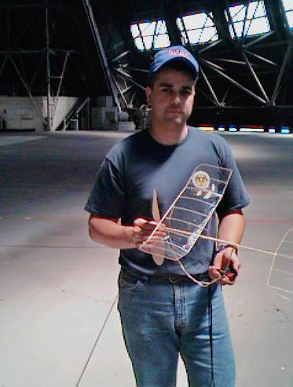
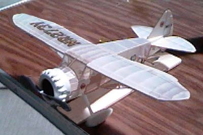
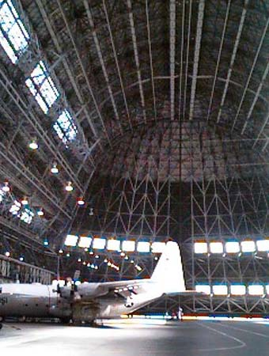

Note: Due to lead contamination, flying at Moffett Field has been suspended indefinitely.
|
Here are just a few quick notes and images from our FF indoor session at Moffett Field this afternoon. 35 miles south of San Francisco,Hangar 1 at Moffett Field was home to the grand Navy dirigible, U.S.S. Macon. Hangar 1, completed in 1933, measures inside at 1133 feet long, 308 wide, and 198 high. As large as that seems, the Macon missed the walls by just 6-12 feet!! Today was the first time sanctioned flying has been permitted in 20 - 30 years, largely due to the efforts of FFMLer Captain Dave Smith and a few other local fliers.
There was a lot of good flying going on, despite pretty blustery conditions. The north doors are left open a couple of feet, to clear the fumes from vehicles and aircraft. About halfway along the east side is a good sized door that is also permanently open for vehicular access. Between the two, and the inevitable gaps elsewhere, a fair bit of air flows. The southern main doors were closed, especially for us. This may not seem like much, but the doors are 500 tons each, requiring 150 horsepower for 5 minutes to close. Due to the constant drift, the gossamer F1D models stayed in their boxes, while duration folks flew pennyplanes and ministicks, with a few EZ-B flights as well.  Here grins Captain Dave after completing a new personal record Pennyplane flight of 11:57. Hard up against the 12 minute mark, he will no doubt be out again with this model. Good show Sir, and thanks again for your efforts to make the site available!!  Ray Marcinkowski has a winner here with his Mr. Mulligan from the Dumas walnut scale kit. This beauty was realistically climbing out from ROG's to a number of smooth laps of the 'pylons' before letting back down. Durations were in the 20-25 second range. While impressive in their own right, we talked of different prop and motor combinations which might help this golden age classic leave the field even further behind. Just beware of cutting the pylons, Ray. :-)  Here it is, well half of it anyway. This view looking south shows a C-130 in for maintenance. A 'ffew' straggling diehards are under the fin. Perspective shows the fin much higher than it is. Against the far doors, the fin would be about equal to the lower row of windows. Surprisingly few models landed on it, and those that did, were quickly retrieved by one of our gracious Naval hosts. Not so lucky were the two pennyplanes that, hours apart, found each other on the same rafter more than 180 feet off the floor. Sort of the indoor equivalent of an O.O.S. flight in the sun. Oddly, the horizontal cables, from which the lights are hanging, were rarely a problem. Highlights of the day were many. Just walking into the site was a thrill, knowing it was ours for the day. My new Ministick turned in some good times, despite not having a prop well matched for it in this site. Most flights were in the 5-7 minute range. Next time... I also was the second official member of the 7 second club. That's right, seven sixtieths of a minute. Dave Johnson brought some pneumatic rockets fired by depressing a small airbag under foot. They are officially known as "Stomp Rockets" and we went one better by actually jumping on the pad. It takes just under 7 secs for a rocket to reach the center catwalks and return to the hangar floor. A fortuitous bounce, or slow timer's thumb, will slightly increase that time. Dave and I also delighted in a few BLG flights. That's balloon launch gliders, a trick learned a few years ago at Lakehurst. First, when the serious guys aren't trying to push their models into the rafters, steal their steering balloon. Next, a few balsa and foam contraptions are balanced on top of the balloon, lofted to the ceiling and shaken free. I think everyone delighted in watching these small models slowly settle to the floor. Dave's efforts handily outlasted mine, with top times approaching 3 minutes. No doubt some serious efforts can push that much higher. I hope it doesn't become a real event with rules. A terrible end to great fun. There were only a few lowlights. First obviously, was the drift and turbulence. Many of us were looking forward to seeing microfilm ghost about. Few would have minded if the hangups at altitude had not occured. My own lowlight found the charger for my Thistle and SE-5 spending the day on my bench at home. So that is a small look at a day at Moffett. I left out a lot. Things like members of 4, or more, flying clubs present. Past world champions and beginners alike, sharing the air, with rubber, electric, co2, catapult gliders, micro r/c, bostonian, ama darts, etc... You name it, we probably saw it. Even an honest to goodness, stock Sleek Streak doing close to a minute. All in all it was a great day. Thanks to our generous hosts and all those that made today possible. Thayer Special thanks to Norki for the generous loan of a digital camera. I know he wanted to take it fishing today. |
Return to Home Page
other model pix
Copyright 1997, Thayer Syme. All rights reserved